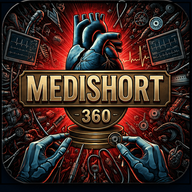

Simulador de ventilación mecánica
MEDISHORT360 · Entorno educativo seguro
Introduce tu código de activación para desbloquear el simulador. Solo se pide una vez en este dispositivo.
La activación necesita internet una única vez.
Después el simulador funciona sin conexión.
📺 MEDISHORT360 · Simulación clínica
Simulador de ventilación mecánica · MEDISHORT360
💡 El volumen corriente siempre se calcula con el peso predicho por talla y sexo, nunca con el peso real. Usar el peso real es uno de los errores más frecuentes y más lesivos.
Selecciona el modo ventilatorio. Se muestran solo los parámetros propios de cada modo, igual que en el equipo real.
Toca – / + o arrastra el deslizador. El paciente virtual responde de forma progresiva, como en la realidad.
Los límites de alarma protegen al paciente. Apagarlos o abrirlos de más es un error de seguridad grave.
Maniobras y eventos clínicos disponibles durante la simulación.
Bitácora de la sesión: cada cambio y cada consecuencia.